Dungeon Teacher · Empacotamento 34
28/10/2026 · 18 capturas dos ensaios aprovados. ADM e quatro alunos carregaram recursos ASAR da distribuição 34 em perfis temporários. No ensaio com três preparados, o servidor Node usou o código verificado contra o pacote. A morte do Lobo foi provocada como fixture somente para conferir a lápide; não representa uma vitória natural do grupo.
Instalação dos executáveis e LAN entre computadores continuam pendentes. Clique nas imagens para abrir o tamanho original.
 ADM + quatro alunos · 01 adm primeiro acesso
ADM + quatro alunos · 01 adm primeiro acesso
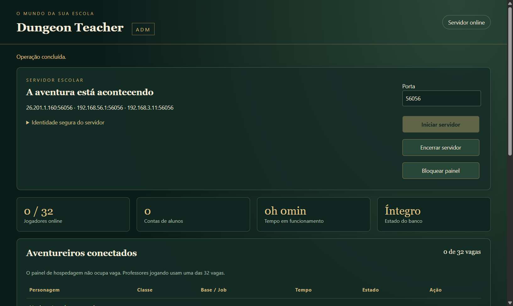
ADM + quatro alunos · 02 adm servidor online
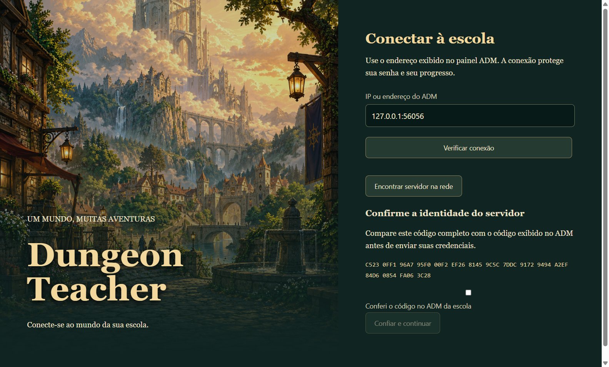
ADM + quatro alunos · 03 conexao manual e identidade
ADM + quatro alunos · 04 adm quatro aventureiros
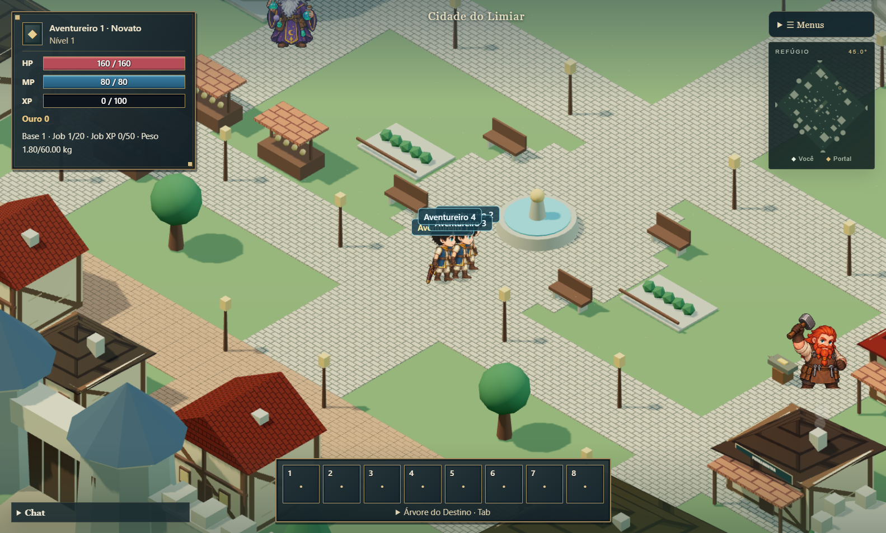
ADM + quatro alunos · 05 jogo quatro clientes
 ADM + quatro alunos · 06 sessao duplicada rejeitada
ADM + quatro alunos · 06 sessao duplicada rejeitada
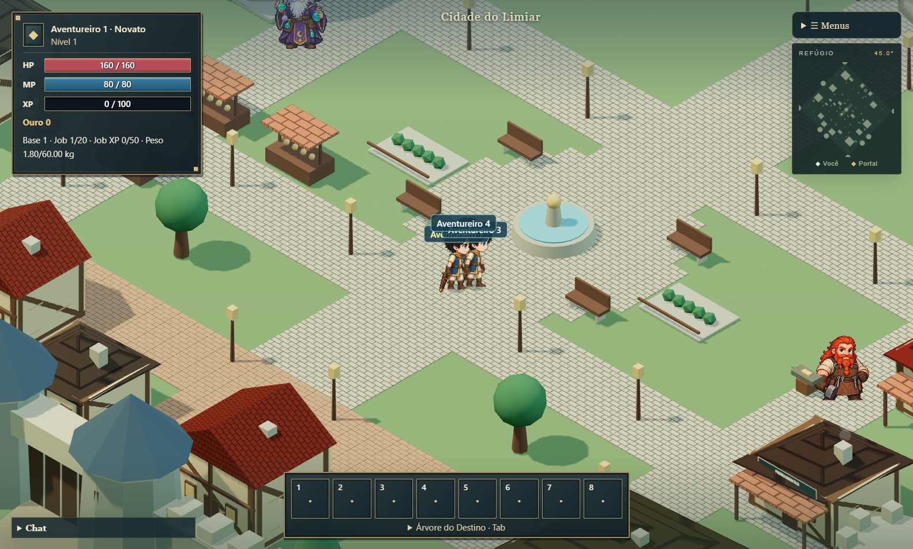
ADM + quatro alunos · 07 retorno ao primeiro cliente
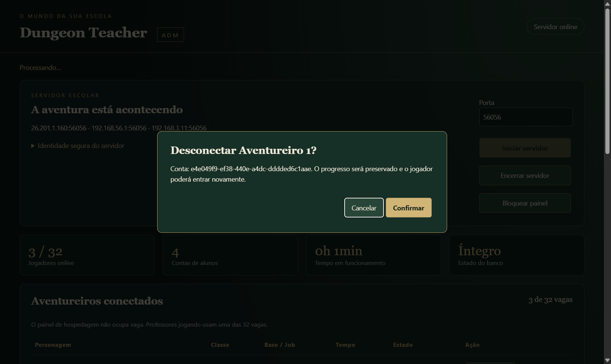
ADM + quatro alunos · 08 confirmacao desconexao
 ADM + quatro alunos · 09 desconexao administrativa
ADM + quatro alunos · 10 backup e monitoramento
ADM + quatro alunos · 09 desconexao administrativa
ADM + quatro alunos · 10 backup e monitoramento
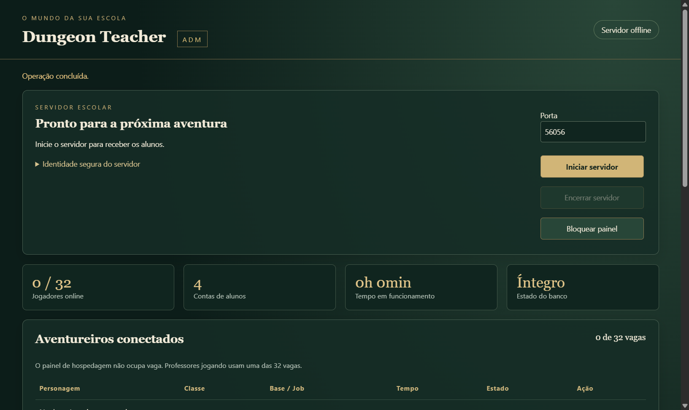
ADM + quatro alunos · 11 servidor encerrado
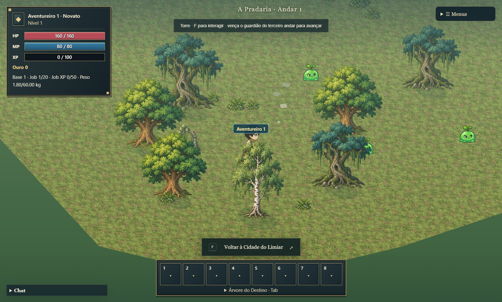
ADM + quatro alunos · 12 pacote andar 1
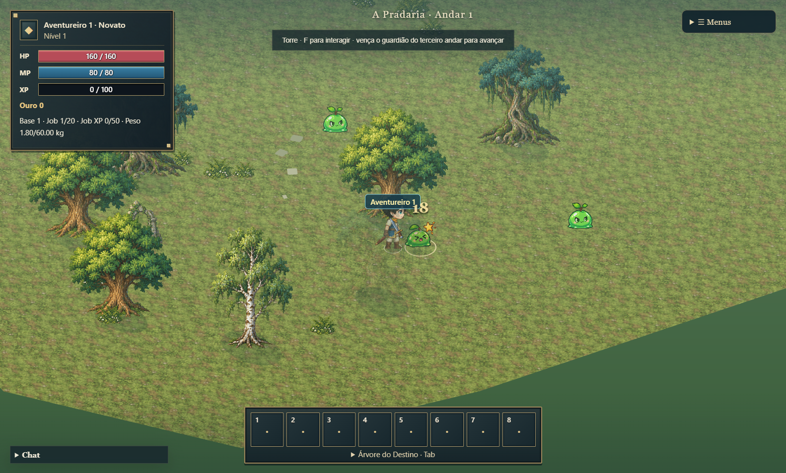
ADM + quatro alunos · 13 combate empacotado
ADM + quatro alunos · 14 backup restaurado
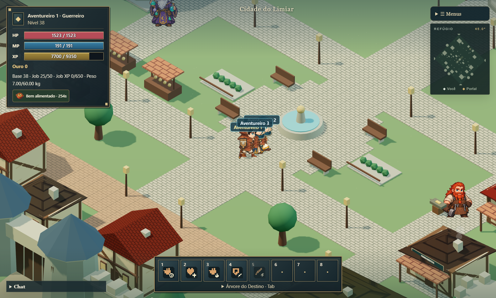
Três alunos preparados · 01 cidade clientes reais
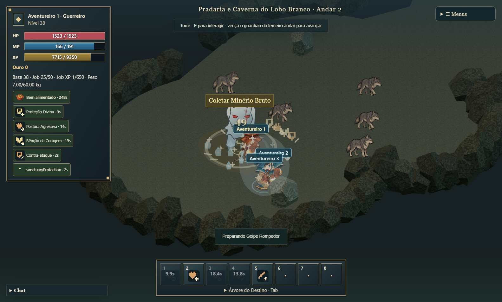
Três alunos preparados · 02 inicio do combate
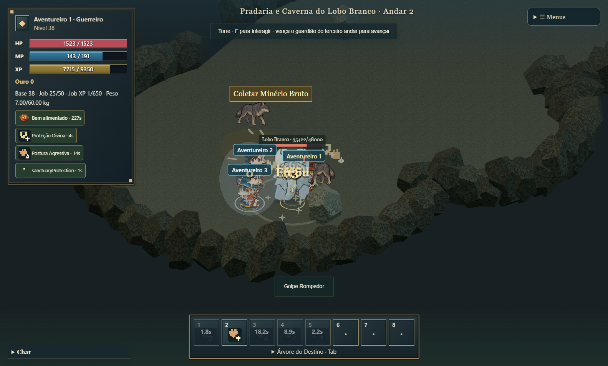
Três alunos preparados · 02 combate lobo branco
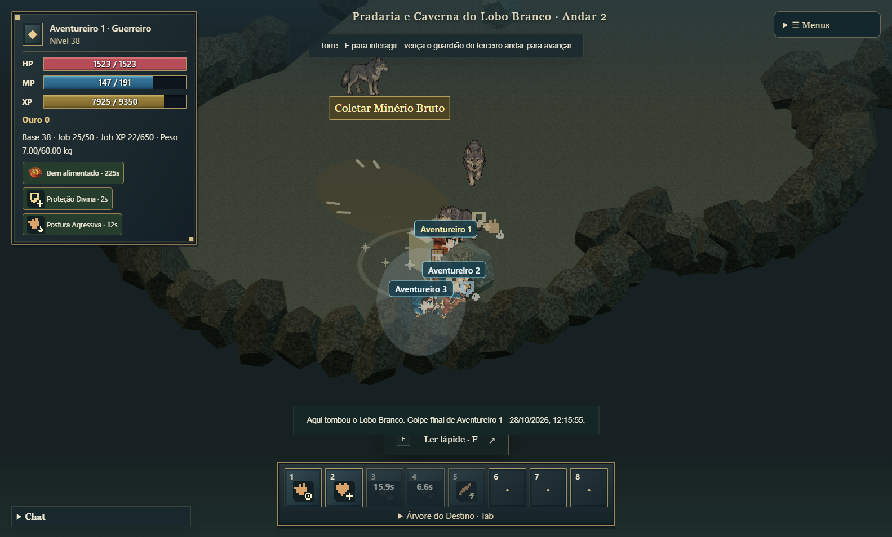
Três alunos preparados · 03 lapide compartilhada